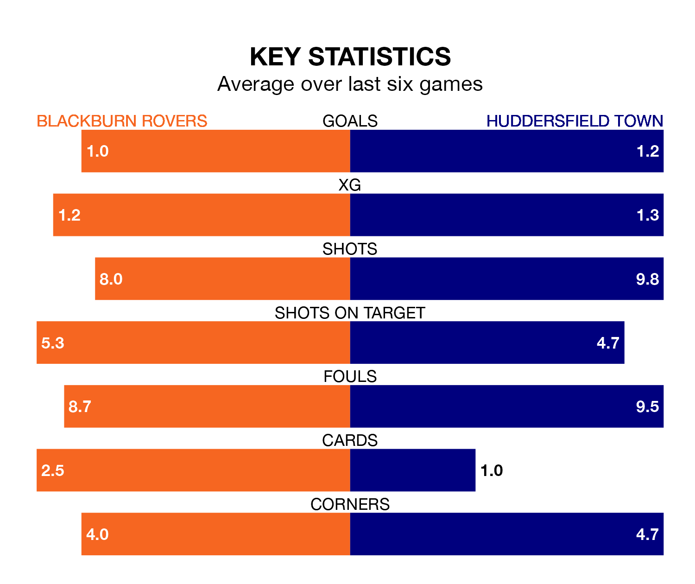

Blackburn Rovers are on a terrible run ahead of hosting Huddersfield Town at Ewood Park on Saturday, with just one point collected from their last six games.
Blackburn have picked up just one draw in their last six EFL Championship games, and face a Terriers side whose last six games have brought one win and two draws.
In Samuel Szmodics, Blackburn have the league's sharpest shooter so far this season. He has notched 16 goals in 25 appearances.
His goal rate of one every 138 minutes is much quicker than that of Michal Helik, Huddersfield's top scorer with a goal every 347 minutes, and a total of seven goals in 27 games.
In the last 10 years, Blackburn and Huddersfield have played each other on 16 occasions. Blackburn won three of them, Huddersfield five, and they drew eight times.
On average, Blackburn scored 1.4 goals and the Terriers 1.6 in those matches.
Their last meeting was on December 26, when Huddersfield won 3-0 at home.
Town are 21st in the table after 27 games, of which they have won five and drawn 11, earning 26 points.
Rovers are three places ahead of the Terriers in 18th, with 10 wins and two draws putting them on 32 points.
With 27 goals in 27 games so far this season, the visitors are scoring at below the league average rate with 1.0 goals per game. And they are conceding more than average, letting in 45 goals at a rate of 1.7 per game.
The home team, meanwhile, are above average scorers, with 1.5 goals per game, compared to a league average of 1.4. They have conceded 1.9 goals per game.
Blackburn's last match was on January 13, a 4-1 loss against West Bromwich Albion, with Jake Garrett getting the goal for Blackburn.
Huddersfield drew 1-1 with Plymouth Argyle last time out, also on January 13, with Josh Koroma on the scoresheet.
Saturday's match will be refereed by James Linington, who has taken charge of 14 EFL Championship games so far this season, issuing one red card and booking 65 players. He has awarded five penalties.
The last Blackburn game Linington refereed was a 2-1 home win against Bristol City on December 12. His last Huddersfield match was their 2-1 win away at West Bromwich Albion on September 2.
Updated: 13:09 (UTC), 17/01/24